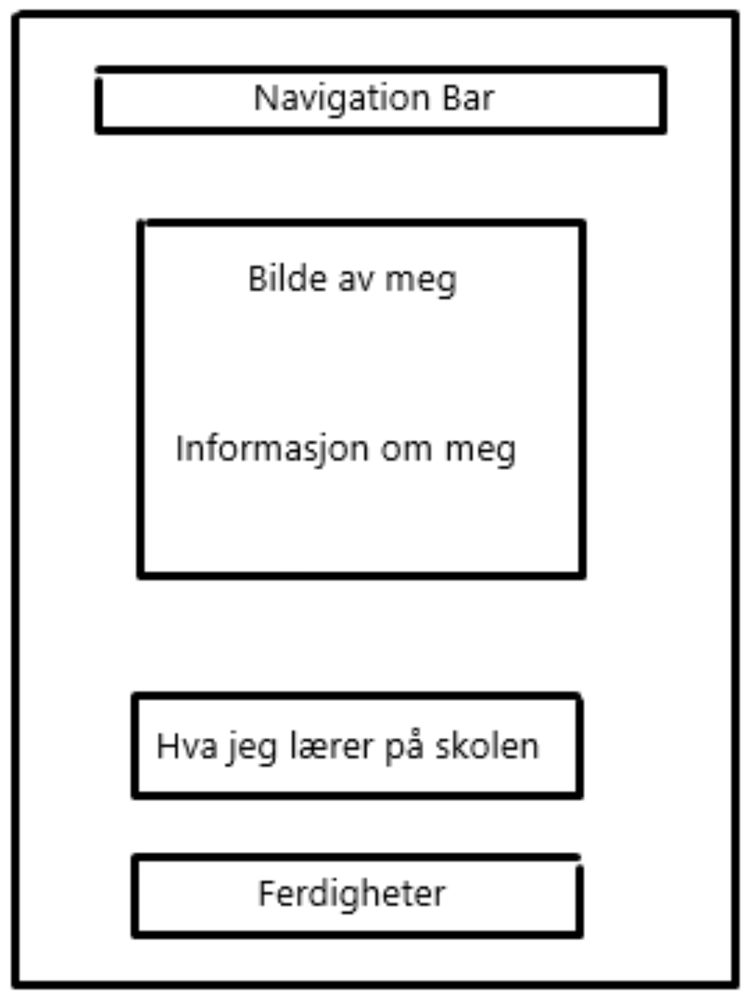

Om meg

Jeg heter Tobias Helgøy og er en 16 år gammel elev på Amalie Skram Videregående Skole. Her går jeg på linjen for informasjonsteknologi og medieproduksjon, hvor jeg får muligheten til å utvikle ferdigheter innen teknologi. Gjennom ulike prosjekter og oppgaver har jeg lært mye om webutvikling, programmering, og digital design. Denne erfaringen har forberedt meg godt for en fremtidig karriere innen IT og media, og jeg ser frem til å bruke kunnskapen min i praktiske sammenhenger i arbeidslivet.
Skisse
Dette er et konsept om hvordan jeg så for meg at nettsiden min ville se ut
